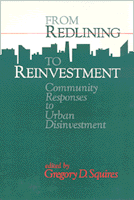

Community activists examine how formerly redlined communities have generated billions of dollars in reinvestment
Community activists examine how formerly redlined communities have generated billions of dollars in reinvestment


 Community activists examine how formerly redlined communities have generated billions of dollars in reinvestment
Community activists examine how formerly redlined communities have generated billions of dollars in reinvestment

|  |
From Redlining to Reinvestmentedited by Gregory D. Squirespaper EAN: 978-0-87722-985-8 (ISBN: 0-87722-985-6) |
"The gang's all here. Greg Squires has assembled...veterans of combat negotiation, and agreement with lenders.... These are the people who know what works and what doesn't."
—Bill Dedman, author of the Pulitzer Prize-Winning series "The Color of Money," published by the Atlanta Journal/Constitution
After decades of suffering redlining and disinvestment by financial institutions, many communities have learned to fight back successfully. In more than seventy U.S. cities, over 300 community-based organizations have negotiated at least eighteen billion dollars in reinvestment commitments in recent years. In original essays, well-known community activists and activist academics tell the stories of some of the most successful reinvestment campaigns in Boston, Pittsburgh, Detroit, Chicago, Milwaukee, Atlanta, and California.
Foreword: Community Reinvestment is Good for Cities, Good For Lenders – Edward McDonald
1. Community Reinvestment: An Emerging Social Movement – Gregory D. Squires
2. The Struggle for Community Investment in Boston, 1989-1991 – James T. Campen
3. The Community Reinvestment Act and Neighborhood Revitalization in Pittsburgh – John T. Metzger
4. Confrontation, Negotiation, and Collaboration: Detroit's Multibillion-
Dollar Deal – David Everett
5. Reinvestments in Chicago Neighborhoods: A Twenty-Year Struggle – Jean Pogge
6. Milwaukee: A Tale of Three Cities – Michael L. Glabere
7. Reluctant Response to Community Pressure in Atlanta – Larry E. Keating, Lynn M. Brazen, and Stan F. Fitterman
8. California: Lessons from Statewide Advocacy, Local Government, and Private Industry Initiatives – David Paul Rosen
9. The Legacy, the Promise, and the Unfinished Agenda – Calvin Bradford and Gale Cincotta
About the Contributors
Gregory D. Squires is Professor of Sociology and a member of the Urban Studies Program faculty at the University of Wisconsin-Milwaukee. He is co-author of Chicago: Race, Class, and the Response to Urban Decline (Temple).
Contributors: Calvin Bradford, Lynn M. Brazen, James T. Campen, Gale Cincotta, David Everett, Stan F. Fitterman, Michael L. Glabere, Larry E. Keating, Edward McDonald, John T. Metzger, Jean Pogge, David Paul Rosen, and the editor.
Urban Studies
Labor Studies and Work
Conflicts in Urban and Regional Development, edited by John R. Logan and Todd Swanstrom.
Conflicts in Urban and Regional Development, edited by John R. Logan and Todd Swanstrom, includes books on urban policy and issues of city and regional planning, accounts of the political economy of individual cities, and books that compare policies across cities and countries.
© 2015 Temple University. All Rights Reserved. This page: http://www.temple.edu/tempress/titles/860_reg.html.